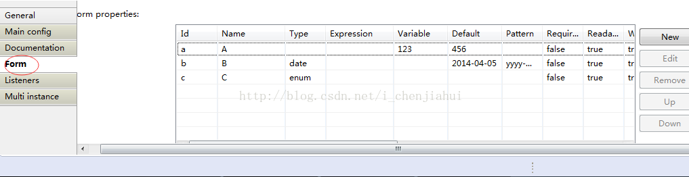
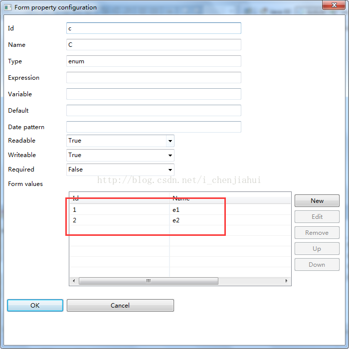

版权声明：本文为博主原创文章，未经博主允许不得转载。 https://blog.csdn.net/i_chenjiahui/article/details/45502187
最近使用activiti，需求中需要用到表单设置节点的默认变量。源码如下：
在bpmn文件中，选中节点，配置表单属性：

类型是enum的，可以下方设置可以选值，如下：

当流程走到该节点时使用下列代码获取表单信息：
ProcessEngine processEngine = ProcessEngines.getDefaultProcessEngine();
String taskId = "1102";
String processDefinitionId = "myProcess:2:904";
List<FormProperty> list = processEngine.getFormService().getTaskFormData(taskId).getFormProperties();
if(list!=null && list.size()>0){
for(FormProperty formProperty:list){
System.out.println(formProperty.getId() + " " + formProperty.getName() + " " +formProperty.getValue());
}
}
回显如下：
a A 123
b B 2014-04-05
c C null
根据官方5.16用户手册描述，表单支持的类型有以下几种：
string (org.activiti.engine.impl.form.StringFormType)long (org.activiti.engine.impl.form.LongFormType)enum (org.activiti.engine.impl.form.EnumFormType)date (org.activiti.engine.impl.form.DateFormType)boolean (org.activiti.engine.impl.form.BooleanFormType)